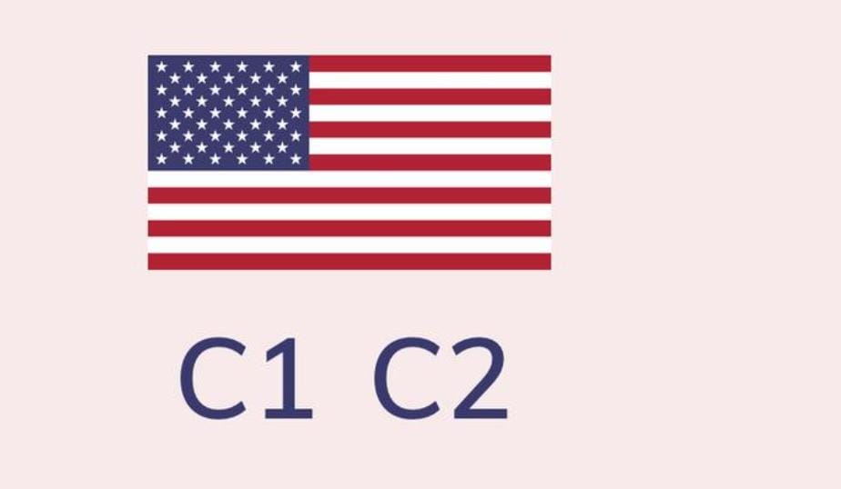

¡Meta Cumplida! Terminé mi Nivel Intermedio de Inglés
Con mucha constancia y práctica, culminé satisfactoriamente todos los ciclos del nivel intermedio de inglés. Un paso fundamental para mi crecimiento profesional.

Con mucha constancia y práctica, culminé satisfactoriamente todos los ciclos del nivel intermedio de inglés. Un paso fundamental para mi crecimiento profesional.
Retomando los estudios con entusiasmo al iniciar el nivel avanzado de inglés, perfeccionando la fluidez y comprensión para alcanzar el dominio total del idioma.